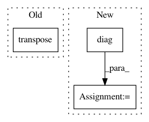

506b234094009d55d326f1ce957f53f15d4b65ee,geomstats/spd_matrices_space.py,,group_exp,#Any#,35
Before Change
[eigenvalues, vectors] = np.linalg.eigh(sym_mat)
diag_exp = np.diag(np.exp(eigenvalues))
exp = np.dot(np.dot(vectors, diag_exp), vectors.transpose())
return(exp)
After Change
[eigenvalues, vectors] = np.linalg.eigh(sym_mat)
diag_exp = np.zeros((n_sym_mats, mat_dim, mat_dim))
for i in range(n_sym_mats):
diag_exp[i] = np.diag(np.exp(eigenvalues[i]))
print("diag_exp")
print(diag_exp.shape)
In pattern: SUPERPATTERN
Frequency: 3
Non-data size: 3
Instances
Project Name: geomstats/geomstats
Commit Name: 506b234094009d55d326f1ce957f53f15d4b65ee
Time: 2018-02-26
Author: ninamio78@gmail.com
File Name: geomstats/spd_matrices_space.py
Class Name:
Method Name: group_exp
Project Name: stellargraph/stellargraph
Commit Name: 789d65f38f0949a3f03f61908a207cb558746769
Time: 2019-12-19
Author: andrew.docherty@data61.csiro.au
File Name: stellargraph/layer/preprocessing_layer.py
Class Name: GraphPreProcessingLayer
Method Name: call
Project Name: geomstats/geomstats
Commit Name: 506b234094009d55d326f1ce957f53f15d4b65ee
Time: 2018-02-26
Author: ninamio78@gmail.com
File Name: geomstats/spd_matrices_space.py
Class Name:
Method Name: group_log